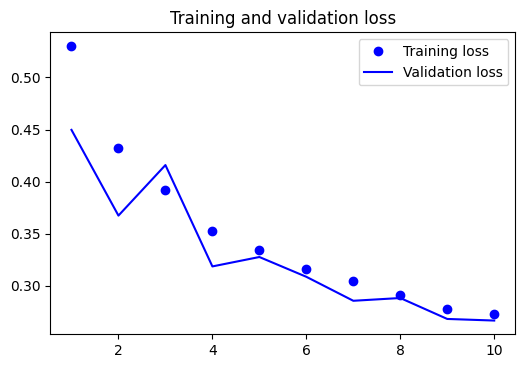
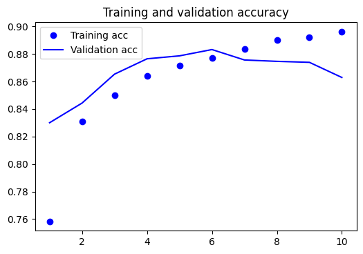
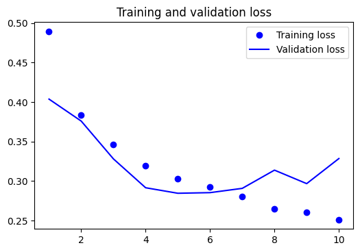
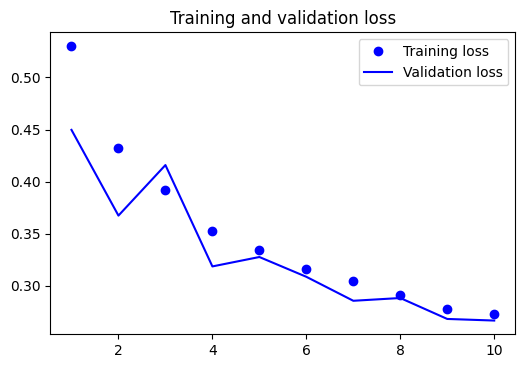
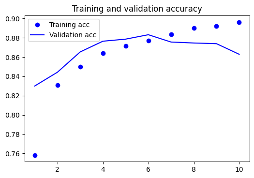
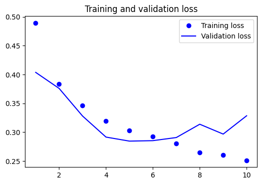

Assignment IV: Sentiment Analysis Using Deep Learning¶
Question 1¶
Build a movie review classifier using the dataset in demo_data/movie_reviews.csv. The objective of the classifier is to automatically classify a movie review into either positive or negative category.
The dataset is the famous IMBd moview reviews dataset. You can take a look at the SOTA classification performance on this dataset here.
In your experiments, please include the following strategies in your considerations:
Please use sequence models for this task.
For embedding layers, please try both self-trained embedding layer along with the sentiment classifier, as well as pre-trained embeddings provided in
spacy.Please include dropout and regularization layers to avoid overfitting.
This tutorial uses Sarkar’s book example.
Simple Multilayer Deep Neural Network on Sentiment Classification
Use the average text embeddings based on word embeddings
Use both self-trained word embeddings and spacy embeddings.
%%time
## loading packages
import pandas as pd
import numpy as np
import nltk
import gensim
import tensorflow
from tensorflow import keras
from keras.preprocessing.text import Tokenizer
from keras.preprocessing import sequence
from keras.models import Sequential
from keras.layers import Dropout, Activation, Dense
from sklearn.preprocessing import LabelEncoder
from keras.layers.normalization import BatchNormalization
np.set_printoptions(precision=2, linewidth=80)
CPU times: user 1.17 ms, sys: 2.15 ms, total: 3.32 ms
Wall time: 83.8 ms
print(tensorflow.__version__)
## Loading the raw data and look at the structure of the data quickly
dataset = pd.read_csv('../../../RepositoryData/data/movie_reviews.csv')
# take a peek at the data
print(dataset.head())
## split reviews and sentiments
reviews = np.array(dataset['review'])
sentiments = np.array([0 if l=="negative" else 1 for l in dataset['sentiment']])
print(reviews.shape)
print(sentiments.shape)
# build train and test datasets
train_reviews = reviews[:35000]
train_sentiments = sentiments[:35000]
test_reviews = reviews[35000:]
test_sentiments = sentiments[35000:]
2.4.1
review sentiment
0 One of the other reviewers has mentioned that ... positive
1 A wonderful little production. <br /><br />The... positive
2 I thought this was a wonderful way to spend ti... positive
3 Basically there's a family where a little boy ... negative
4 Petter Mattei's "Love in the Time of Money" is... positive
(50000,)
(50000,)
import TAWP
import re
from TAWP.contractions import CONTRACTION_MAP
def expand_contractions(text, contraction_mapping=CONTRACTION_MAP):
## create a regex pattern of all contracted forms
contractions_pattern = re.compile('({})'.format('|'.join(
contraction_mapping.keys())),
flags=re.IGNORECASE | re.DOTALL)
def expand_match(contraction):
match = contraction.group(0) # the whole matched contraction
# if the matched contraction (=keys) exists in the dict,
# get its corresponding uncontracted form (=values)
expanded_contraction = contraction_mapping.get(match)\
if contraction_mapping.get(match)\
else contraction_mapping.get(match.lower())
return expanded_contraction
# find each contraction in the pattern,
# find it from text,
# and replace it using the output of
# expand_match
expanded_text = contractions_pattern.sub(expand_match, text)
expanded_text = re.sub("'", "", expanded_text)
return expanded_text
def normalize(text):
text = expand_contractions(text)
text = re.sub(r'<.+?>',"", text)
text = re.sub(r'\s+',' ', text)
return text
normalize_corpus = np.vectorize(normalize)
print(train_reviews[101])
Okay, last night, August 18th, 2004, I had the distinct displeasure of meeting Mr. Van Bebble at a showing of the film The Manson Family at the Three Penny in Chicago as part of the Chicago Underground Film Festival. Here's what I have to say about it. First of all, the film is an obvious rip off of every Kenneth Anger, Roman Polanski, Oliver Stone and Terry Gilliam movie I've ever seen. Second of all, in a short Q & A session after the show Mr. Van Bebble immediately stated that he never made any contact with the actual Manson Family members or Charlie himself, calling them liars and saying he wanted nothing to do with them, that the film was based on his (Van Bebble's) take on the trial having seen it all from his living room on TV and in the news (and I'm assuming from the Autobiography and the book Helter Skelter which were directly mimicked through the narrative). So I had second dibs on questions, I asked if he was trying to present the outsider, Mtv, sex drugs and rock 'n roll version and not necessarily the true story. This question obviously pissed off the by now sloshed director who started shouting "f*** you, shut the f*** up, this is the truth! All those other movies are bullsh**!"<br /><br />Well anyway, I didn't even think about how ridiculous this was until the next day when I read the tagline for the film, "You've heard the laws side of the story...now hear the story as it is told by the Manson Family." Excuse me, if this guy has never even spoken to the family and considers them to be liars that he doesn't want to have anything to do with, how in God's name can he tell the story for them!? This is the most ridiculous statement I have ever heard! The film was obviously catered to the sex drugs and rock 'n roll audience that it had no trouble in attracting to the small, dimly lit theatre, and was even more obviously spawned by the sex drugs and rock 'n roll mind of a man who couldn't even watch his own film without getting up every ten minutes to go get more beer or to shout some sort of Rocky Horroresque call line to the actors on screen. This film accomplishes little more than warping the public's image of actual events (which helped shape the state of America and much of the world today) into some sort of Slasher/Comic Book/Porno/Rape fantasy dreamed up by an obviously shallow individual.<br /><br />The film was definitely very impressive to look at. The soundtrack was refreshing as it contained actual samples of Charlie's work with the Family off of his Lie album. The editing was nice and choppy to simulate the nauseating uncertainty of most modern music videos. All in all this film would have made a much better addition to the catalogues at Mtv than to the Underground Film Festival or for that matter the minds of any intellectual observers. I felt like I was at a midnight Rocky Horror viewing the way the audience was dressed and behaving (probably the best part of the experience). The cast was very good with the exception of Charlie who resembled some sort of stoned Dungeons and Dragons enthusiast more than the actual role he was portraying. The descriptions the film gave of him as full of energy, throwing ten things at you and being very physical about it all the while did not match at all the slow, lethargic, and chubby representation that was actually presented.<br /><br />All in all the film basically explains itself as Sadie (or maybe it was Linda) declares at the end, "You can write a bunch of bullsh** books or make a bunch of bullsh** movies...etc. etc." Case in point. Even the disclaimer "Based on a True Story" is a dead giveaway, signalling that somewhere beneath this psychedelic garbage heap lay the foundation of an actual story with content that will make and has made a difference in the world. All you have to do is a little bit of alchemy to separate the truth from the the crap, or actually, maybe you could just avoid it all together and go read a book instead.<br /><br />All I can say is this, when the film ended I got a free beer so I'm glad I went, but not so glad I spent fifteen dollars on my ticket to be told to shut the f*** up for asking the director a question. Peace.
print(normalize_corpus(train_reviews[1]))
A wonderful little production. The filming technique is very unassuming- very old-time-BBC fashion and gives a comforting, and sometimes discomforting, sense of realism to the entire piece. The actors are extremely well chosen- Michael Sheen not only "has got all the polari" but he has all the voices down pat too! You can truly see the seamless editing guided by the references to Williams diary entries, not only is it well worth the watching but it is a terrificly written and performed piece. A masterful production about one of the great masters of comedy and his life. The realism really comes home with the little things: the fantasy of the guard which, rather than use the traditional dream techniques remains solid then disappears. It plays on our knowledge and our senses, particularly with the scenes concerning Orton and Halliwell and the sets (particularly of their flat with Halliwells murals decorating every surface) are terribly well done.
%%time
## Processing is ignored
norm_train_reviews = normalize_corpus(train_reviews)
norm_test_reviews = normalize_corpus(test_reviews)
CPU times: user 1min 46s, sys: 979 ms, total: 1min 47s
Wall time: 1min 49s
NUM_WORDS = 10000
tokenizer=Tokenizer(num_words=NUM_WORDS)
tokenizer.fit_on_texts(train_reviews)
# vocab_size = len(tokenizer.word_index) + 1
VOCAB_SIZE = tokenizer.num_words + 1
print('Vocabulary Size: %d' % vocab_size)
Vocabulary Size: 10001
list(tokenizer.word_index.items())[:10]
[('the', 1),
('and', 2),
('a', 3),
('of', 4),
('to', 5),
('is', 6),
('br', 7),
('in', 8),
('it', 9),
('i', 10)]
def reviews_to_sequences(reviews, MAX_LEN = 200):
reviews_int = tokenizer.texts_to_sequences(reviews)
reviews_pad = sequence.pad_sequences(reviews_int,
maxlen = MAX_LEN,
truncating='pre',
padding='pre')
return np.array(reviews_pad).astype('float32')
X_train = reviews_to_sequences(train_reviews)
X_test = reviews_to_sequences(test_reviews)
y_train = keras.utils.to_categorical(train_sentiments, num_classes) ## sequences to one-hot
y_test = keras.utils.to_categorical(test_sentiments, num_classes) ## sequences to one-hot
print(X_train.shape)
print(y_train[:10])
(35000, 200)
[[0. 1.]
[0. 1.]
[0. 1.]
[1. 0.]
[0. 1.]
[0. 1.]
[0. 1.]
[1. 0.]
[1. 0.]
[0. 1.]]
import matplotlib.pyplot as plt
import matplotlib
import pandas as pd
# Plotting results
def plot1(history):
matplotlib.rcParams['figure.dpi'] = 100
acc = history.history['accuracy']
val_acc = history.history['val_accuracy']
loss = history.history['loss']
val_loss = history.history['val_loss']
epochs = range(1, len(acc)+1)
## Accuracy plot
plt.plot(epochs, acc, 'bo', label='Training acc')
plt.plot(epochs, val_acc, 'b', label='Validation acc')
plt.title('Training and validation accuracy')
plt.legend()
## Loss plot
plt.figure()
plt.plot(epochs, loss, 'bo', label='Training loss')
plt.plot(epochs, val_loss, 'b', label='Validation loss')
plt.title('Training and validation loss')
plt.legend()
plt.show()
def plot2(history):
pd.DataFrame(history.history).plot(figsize=(8,5))
plt.grid(True)
#plt.gca().set_ylim(0,1)
plt.show()
def build_model_lstm():
model = Sequential()
# model.add(Input(shape=(MAX_LEN,)))
model.add(Embedding(VOCAB_SIZE, EMBED_DIM, mask_zero=True))
model.add(SpatialDropout1D(0.2))
model.add(LSTM(LSTM_DIM, dropout=0.2, recurrent_dropout=0.2))
model.add(Dense(2, activation="softmax"))
return model
def build_model_lstm_pretrained_emb(train_emb=False):
model = Sequential()
# model.add(Input(shape=(MAX_LEN,)))
model.add(Embedding(VOCAB_SIZE, EMBED_DIM, mask_zero=True,
weights=[embedding_matrix], trainable=train_emb))
model.add(SpatialDropout1D(0.2))
model.add(LSTM(LSTM_DIM, dropout=0.2, recurrent_dropout=0.2))
model.add(Dense(2, activation="softmax"))
return model
def build_model_bilstm_pretrain_emb(train_emb=False):
model = Sequential()
model.add(Embedding(VOCAB_SIZE, EMBED_DIM, mask_zero=True,
weights=[embedding_matrix], trainable=train_emb))
model.add(Bidirectional(LSTM(LSTM_DIM, return_sequences=True, dropout=0.5)))
model.add(Bidirectional(LSTM(LSTM_DIM, dropout=0.25)))
model.add(Dense(2, activation="softmax"))
return model
### Using Spacy embeddings
import spacy
nlp = spacy.load('en_core_web_lg', disable=['parser', 'tag','entity'])
w2id = tokenizer.word_index
id2w = {id:w for (w,id) in w2id.items()}
## initialize word embedding matrix
EMBED_DIM = 300
embedding_matrix = np.zeros((VOCAB_SIZE, EMBED_DIM))
embedding_matrix.shape
unk_cnt = 0
unk_set = set()
len(w2id)
spacy_w2v = {}
spacy_w2v = {nlp.vocab.strings[wid]:wvec for (wid, wvec) in nlp.vocab.vectors.items()}
spacy_w2v['the'][:10]
array([ 0.27, -0.06, -0.19, 0.02, -0.02, 0.01, -0.14, 0.18, 0.18, 2.59],
dtype=float32)
nlp('the').vector[:10]
array([ 0.27, -0.06, -0.19, 0.02, -0.02, 0.01, -0.14, 0.18, 0.18, 2.59],
dtype=float32)
%%time
unk_cnt = 0
unk_set = set()
for word in list(w2id.keys())[:10000]:
cur_word_vec = spacy_w2v.get(word)
if cur_word_vec is not None:
cur_word_id = w2id[word]
embedding_matrix[cur_word_id]=cur_word_vec
else:
unk_cnt +=1
unk_set.add(word)
print("Total Unkown Words in IMDB:", unk_cnt)
Total Unkown Words in IMDB: 195
CPU times: user 30.2 ms, sys: 8.25 ms, total: 38.4 ms
Wall time: 37.4 ms
## Using GloVe Embeddings
glove_file = "../../../RepositoryData/data/glove/glove.6B/glove.6B.50d.txt"
glove_w2v = {}
with open(glove_file,'r') as file:
for line in file:
tokens = line.split()
word = tokens[0]
vector = np.array(tokens[1:], dtype=np.float32)
if vector.shape[0]==50:
glove_w2v[word] = vector
else:
print("There was an issue with " + word)
print(len(glove_w2v))
400000
%%time
## initialize word embedding matrix
EMBED_DIM = 50
embedding_matrix_glove = np.zeros((VOCAB_SIZE, EMBED_DIM))
embedding_matrix_glove.shape
unk_cnt = 0
unk_set = set()
for word in list(w2id.keys())[:10000]:
cur_word_vec = glove_w2v.get(word)
if cur_word_vec is not None:
cur_word_id = w2id[word]
embedding_matrix_glove[cur_word_id]=cur_word_vec
else:
unk_cnt +=1
unk_set.add(word)
print("Total Unkown Words in IMDB (GloVe):", unk_cnt)
Total Unkown Words in IMDB (GloVe): 184
CPU times: user 22.1 ms, sys: 2.23 ms, total: 24.3 ms
Wall time: 22.4 ms
## Model Building
from keras.models import Sequential
from keras.layers import Dense, Embedding, Dropout, SpatialDropout1D, Input, Bidirectional, LSTM
LSTM_DIM = 64 # total LSTM units
model1 = build_model_lstm()
model2_1 = build_model_lstm_pretrained_emb(train_emb=False)
model2_2 = build_model_lstm_pretrained_emb(train_emb=True)
model3_1 = build_model_bilstm_pretrain_emb(train_emb=False)
model3_2 = build_model_bilstm_pretrain_emb(train_emb=True)
model1.compile(loss="categorical_crossentropy", optimizer="adam",
metrics=["accuracy", "Precision", "Recall"])
model2_1.compile(loss="categorical_crossentropy", optimizer="adam",
metrics=["accuracy", "Precision", "Recall"])
model2_2.compile(loss="categorical_crossentropy", optimizer="adam",
metrics=["accuracy", "Precision", "Recall"])
model3_1.compile(loss="categorical_crossentropy", optimizer="adam",
metrics=["accuracy", "Precision", "Recall"])
model3_2.compile(loss="categorical_crossentropy", optimizer="adam",
metrics=["accuracy", "Precision", "Recall"])
EPOCH= 10
BATCH_SIZE = 256
print(X_train.shape)
print(y_train.shape)
(35000, 200)
(35000, 2)
## Model fitting
history1 = model1.fit(X_train, y_train,
epochs=EPOCH,
batch_size= BATCH_SIZE,
validation_split=0.2)
Epoch 1/10
110/110 [==============================] - 108s 950ms/step - loss: 0.5505 - accuracy: 0.6854 - precision: 0.6854 - recall: 0.6854 - val_loss: 0.2941 - val_accuracy: 0.8789 - val_precision: 0.8789 - val_recall: 0.8789
Epoch 2/10
110/110 [==============================] - 94s 856ms/step - loss: 0.2328 - accuracy: 0.9103 - precision: 0.9103 - recall: 0.9103 - val_loss: 0.2995 - val_accuracy: 0.8806 - val_precision: 0.8806 - val_recall: 0.8806
Epoch 3/10
110/110 [==============================] - 93s 847ms/step - loss: 0.1613 - accuracy: 0.9425 - precision: 0.9425 - recall: 0.9425 - val_loss: 0.3269 - val_accuracy: 0.8761 - val_precision: 0.8761 - val_recall: 0.8761
Epoch 4/10
110/110 [==============================] - 97s 879ms/step - loss: 0.1191 - accuracy: 0.9585 - precision: 0.9585 - recall: 0.9585 - val_loss: 0.3472 - val_accuracy: 0.8687 - val_precision: 0.8687 - val_recall: 0.8687
Epoch 5/10
110/110 [==============================] - 100s 906ms/step - loss: 0.0961 - accuracy: 0.9676 - precision: 0.9676 - recall: 0.9676 - val_loss: 0.4318 - val_accuracy: 0.8696 - val_precision: 0.8696 - val_recall: 0.8696
Epoch 6/10
110/110 [==============================] - 95s 864ms/step - loss: 0.0718 - accuracy: 0.9776 - precision: 0.9776 - recall: 0.9776 - val_loss: 0.5271 - val_accuracy: 0.8674 - val_precision: 0.8674 - val_recall: 0.8674
Epoch 7/10
110/110 [==============================] - 95s 863ms/step - loss: 0.0491 - accuracy: 0.9843 - precision: 0.9843 - recall: 0.9843 - val_loss: 0.6444 - val_accuracy: 0.8630 - val_precision: 0.8630 - val_recall: 0.8630
Epoch 8/10
110/110 [==============================] - 96s 870ms/step - loss: 0.0571 - accuracy: 0.9828 - precision: 0.9828 - recall: 0.9828 - val_loss: 0.6434 - val_accuracy: 0.8631 - val_precision: 0.8631 - val_recall: 0.8631
Epoch 9/10
110/110 [==============================] - 95s 862ms/step - loss: 0.0586 - accuracy: 0.9796 - precision: 0.9796 - recall: 0.9796 - val_loss: 0.6003 - val_accuracy: 0.8641 - val_precision: 0.8641 - val_recall: 0.8641
Epoch 10/10
110/110 [==============================] - 96s 869ms/step - loss: 0.0401 - accuracy: 0.9881 - precision: 0.9881 - recall: 0.9881 - val_loss: 0.6364 - val_accuracy: 0.8614 - val_precision: 0.8614 - val_recall: 0.8614
## Model fitting
history2_1 = model2_1.fit(X_train, y_train,
epochs=EPOCH,
batch_size= BATCH_SIZE,
validation_split=0.2)
## Model fitting
history2_2 = model2_2.fit(X_train, y_train,
epochs=EPOCH,
batch_size= BATCH_SIZE,
validation_split=0.2)
## Model fitting
history3_1 = model3_1.fit(X_train, y_train,
epochs=EPOCH,
batch_size= BATCH_SIZE,
validation_split=0.2)
## Model fitting
history3_2 = model3_2.fit(X_train, y_train,
epochs=EPOCH,
batch_size= BATCH_SIZE,
validation_split=0.2)
Epoch 1/10
110/110 [==============================] - 72s 631ms/step - loss: 0.5914 - accuracy: 0.6749 - precision: 0.6749 - recall: 0.6749 - val_loss: 0.4497 - val_accuracy: 0.8114 - val_precision: 0.8114 - val_recall: 0.8114
Epoch 2/10
110/110 [==============================] - 69s 624ms/step - loss: 0.4381 - accuracy: 0.8005 - precision: 0.8005 - recall: 0.8005 - val_loss: 0.3674 - val_accuracy: 0.8436 - val_precision: 0.8436 - val_recall: 0.8436
Epoch 3/10
110/110 [==============================] - 67s 605ms/step - loss: 0.4047 - accuracy: 0.8185 - precision: 0.8185 - recall: 0.8185 - val_loss: 0.4159 - val_accuracy: 0.8387 - val_precision: 0.8387 - val_recall: 0.8387
Epoch 4/10
110/110 [==============================] - 67s 613ms/step - loss: 0.3609 - accuracy: 0.8424 - precision: 0.8424 - recall: 0.8424 - val_loss: 0.3186 - val_accuracy: 0.8666 - val_precision: 0.8666 - val_recall: 0.8666
Epoch 5/10
110/110 [==============================] - 70s 633ms/step - loss: 0.3333 - accuracy: 0.8537 - precision: 0.8537 - recall: 0.8537 - val_loss: 0.3276 - val_accuracy: 0.8671 - val_precision: 0.8671 - val_recall: 0.8671
Epoch 6/10
110/110 [==============================] - 70s 633ms/step - loss: 0.3136 - accuracy: 0.8661 - precision: 0.8661 - recall: 0.8661 - val_loss: 0.3086 - val_accuracy: 0.8704 - val_precision: 0.8704 - val_recall: 0.8704
Epoch 7/10
110/110 [==============================] - 69s 631ms/step - loss: 0.3100 - accuracy: 0.8701 - precision: 0.8701 - recall: 0.8701 - val_loss: 0.2856 - val_accuracy: 0.8823 - val_precision: 0.8823 - val_recall: 0.8823
Epoch 8/10
110/110 [==============================] - 69s 628ms/step - loss: 0.2950 - accuracy: 0.8782 - precision: 0.8782 - recall: 0.8782 - val_loss: 0.2882 - val_accuracy: 0.8821 - val_precision: 0.8821 - val_recall: 0.8821
Epoch 9/10
110/110 [==============================] - 70s 633ms/step - loss: 0.2751 - accuracy: 0.8845 - precision: 0.8845 - recall: 0.8845 - val_loss: 0.2682 - val_accuracy: 0.8874 - val_precision: 0.8874 - val_recall: 0.8874
Epoch 10/10
110/110 [==============================] - 69s 631ms/step - loss: 0.2803 - accuracy: 0.8826 - precision: 0.8826 - recall: 0.8826 - val_loss: 0.2666 - val_accuracy: 0.8920 - val_precision: 0.8920 - val_recall: 0.8920
Epoch 1/10
110/110 [==============================] - 95s 839ms/step - loss: 0.5951 - accuracy: 0.6600 - precision: 0.6600 - recall: 0.6600 - val_loss: 0.3901 - val_accuracy: 0.8399 - val_precision: 0.8399 - val_recall: 0.8399
Epoch 2/10
110/110 [==============================] - 96s 870ms/step - loss: 0.3689 - accuracy: 0.8423 - precision: 0.8423 - recall: 0.8423 - val_loss: 0.3005 - val_accuracy: 0.8759 - val_precision: 0.8759 - val_recall: 0.8759
Epoch 3/10
110/110 [==============================] - 90s 814ms/step - loss: 0.2839 - accuracy: 0.8844 - precision: 0.8844 - recall: 0.8844 - val_loss: 0.2827 - val_accuracy: 0.8826 - val_precision: 0.8826 - val_recall: 0.8826
Epoch 4/10
110/110 [==============================] - 89s 809ms/step - loss: 0.2422 - accuracy: 0.9041 - precision: 0.9041 - recall: 0.9041 - val_loss: 0.2937 - val_accuracy: 0.8849 - val_precision: 0.8849 - val_recall: 0.8849
Epoch 5/10
110/110 [==============================] - 88s 797ms/step - loss: 0.2032 - accuracy: 0.9195 - precision: 0.9195 - recall: 0.9195 - val_loss: 0.2842 - val_accuracy: 0.8919 - val_precision: 0.8919 - val_recall: 0.8919
Epoch 6/10
110/110 [==============================] - 88s 802ms/step - loss: 0.1677 - accuracy: 0.9367 - precision: 0.9367 - recall: 0.9367 - val_loss: 0.2786 - val_accuracy: 0.8931 - val_precision: 0.8931 - val_recall: 0.8931
Epoch 7/10
110/110 [==============================] - 92s 836ms/step - loss: 0.1488 - accuracy: 0.9445 - precision: 0.9445 - recall: 0.9445 - val_loss: 0.2931 - val_accuracy: 0.8913 - val_precision: 0.8913 - val_recall: 0.8913
Epoch 8/10
110/110 [==============================] - 89s 808ms/step - loss: 0.1286 - accuracy: 0.9544 - precision: 0.9544 - recall: 0.9544 - val_loss: 0.3373 - val_accuracy: 0.8914 - val_precision: 0.8914 - val_recall: 0.8914
Epoch 9/10
110/110 [==============================] - 89s 812ms/step - loss: 0.1097 - accuracy: 0.9612 - precision: 0.9612 - recall: 0.9612 - val_loss: 0.3927 - val_accuracy: 0.8863 - val_precision: 0.8863 - val_recall: 0.8863
Epoch 10/10
110/110 [==============================] - 89s 814ms/step - loss: 0.0859 - accuracy: 0.9696 - precision: 0.9696 - recall: 0.9696 - val_loss: 0.3883 - val_accuracy: 0.8891 - val_precision: 0.8891 - val_recall: 0.8891
Epoch 1/10
110/110 [==============================] - 180s 2s/step - loss: 0.5632 - accuracy: 0.6877 - precision: 0.6877 - recall: 0.6877 - val_loss: 0.4038 - val_accuracy: 0.8300 - val_precision: 0.8300 - val_recall: 0.8300
Epoch 2/10
110/110 [==============================] - 161s 1s/step - loss: 0.3872 - accuracy: 0.8305 - precision: 0.8305 - recall: 0.8305 - val_loss: 0.3760 - val_accuracy: 0.8443 - val_precision: 0.8443 - val_recall: 0.8443
Epoch 3/10
110/110 [==============================] - 161s 1s/step - loss: 0.3583 - accuracy: 0.8426 - precision: 0.8426 - recall: 0.8426 - val_loss: 0.3281 - val_accuracy: 0.8653 - val_precision: 0.8653 - val_recall: 0.8653
Epoch 4/10
110/110 [==============================] - 160s 1s/step - loss: 0.3193 - accuracy: 0.8642 - precision: 0.8642 - recall: 0.8642 - val_loss: 0.2916 - val_accuracy: 0.8764 - val_precision: 0.8764 - val_recall: 0.8764
Epoch 5/10
110/110 [==============================] - 160s 1s/step - loss: 0.3055 - accuracy: 0.8700 - precision: 0.8700 - recall: 0.8700 - val_loss: 0.2846 - val_accuracy: 0.8786 - val_precision: 0.8786 - val_recall: 0.8786
Epoch 6/10
110/110 [==============================] - 159s 1s/step - loss: 0.2948 - accuracy: 0.8748 - precision: 0.8748 - recall: 0.8748 - val_loss: 0.2854 - val_accuracy: 0.8831 - val_precision: 0.8831 - val_recall: 0.8831
Epoch 7/10
110/110 [==============================] - 160s 1s/step - loss: 0.2793 - accuracy: 0.8835 - precision: 0.8835 - recall: 0.8835 - val_loss: 0.2908 - val_accuracy: 0.8756 - val_precision: 0.8756 - val_recall: 0.8756
Epoch 8/10
110/110 [==============================] - 160s 1s/step - loss: 0.2680 - accuracy: 0.8898 - precision: 0.8898 - recall: 0.8898 - val_loss: 0.3139 - val_accuracy: 0.8746 - val_precision: 0.8746 - val_recall: 0.8746
Epoch 9/10
110/110 [==============================] - 159s 1s/step - loss: 0.2602 - accuracy: 0.8926 - precision: 0.8926 - recall: 0.8926 - val_loss: 0.2968 - val_accuracy: 0.8739 - val_precision: 0.8739 - val_recall: 0.8739
Epoch 10/10
110/110 [==============================] - 161s 1s/step - loss: 0.2485 - accuracy: 0.8964 - precision: 0.8964 - recall: 0.8964 - val_loss: 0.3286 - val_accuracy: 0.8629 - val_precision: 0.8629 - val_recall: 0.8629
Epoch 1/10
110/110 [==============================] - 209s 2s/step - loss: 0.5685 - accuracy: 0.6718 - precision: 0.6718 - recall: 0.6718 - val_loss: 0.3602 - val_accuracy: 0.8637 - val_precision: 0.8637 - val_recall: 0.8637
Epoch 2/10
110/110 [==============================] - 192s 2s/step - loss: 0.3002 - accuracy: 0.8747 - precision: 0.8747 - recall: 0.8747 - val_loss: 0.3376 - val_accuracy: 0.8814 - val_precision: 0.8814 - val_recall: 0.8814
Epoch 3/10
110/110 [==============================] - 192s 2s/step - loss: 0.2432 - accuracy: 0.9032 - precision: 0.9032 - recall: 0.9032 - val_loss: 0.3058 - val_accuracy: 0.8927 - val_precision: 0.8927 - val_recall: 0.8927
Epoch 4/10
110/110 [==============================] - 191s 2s/step - loss: 0.2138 - accuracy: 0.9174 - precision: 0.9174 - recall: 0.9174 - val_loss: 0.3465 - val_accuracy: 0.8860 - val_precision: 0.8860 - val_recall: 0.8860
Epoch 5/10
110/110 [==============================] - 191s 2s/step - loss: 0.1879 - accuracy: 0.9290 - precision: 0.9290 - recall: 0.9290 - val_loss: 0.3440 - val_accuracy: 0.8830 - val_precision: 0.8830 - val_recall: 0.8830
Epoch 6/10
110/110 [==============================] - 191s 2s/step - loss: 0.1704 - accuracy: 0.9338 - precision: 0.9338 - recall: 0.9338 - val_loss: 0.3493 - val_accuracy: 0.8900 - val_precision: 0.8900 - val_recall: 0.8900
Epoch 7/10
110/110 [==============================] - 191s 2s/step - loss: 0.1355 - accuracy: 0.9492 - precision: 0.9492 - recall: 0.9492 - val_loss: 0.3669 - val_accuracy: 0.8934 - val_precision: 0.8934 - val_recall: 0.8934
Epoch 8/10
110/110 [==============================] - 192s 2s/step - loss: 0.1209 - accuracy: 0.9582 - precision: 0.9582 - recall: 0.9582 - val_loss: 0.3839 - val_accuracy: 0.8936 - val_precision: 0.8936 - val_recall: 0.8936
Epoch 9/10
110/110 [==============================] - 193s 2s/step - loss: 0.1027 - accuracy: 0.9629 - precision: 0.9629 - recall: 0.9629 - val_loss: 0.3863 - val_accuracy: 0.8921 - val_precision: 0.8921 - val_recall: 0.8921
Epoch 10/10
110/110 [==============================] - 191s 2s/step - loss: 0.0878 - accuracy: 0.9685 - precision: 0.9685 - recall: 0.9685 - val_loss: 0.4229 - val_accuracy: 0.8911 - val_precision: 0.8911 - val_recall: 0.8911
plot1(history1)
plot1(history2_1)
plot1(history3_1)
 





Not Used¶
The following codes are from Sarkar’s book. I am not going to use the following codes.
# from nltk.tokenize.toktok import ToktokTokenizer
# tokenizer = ToktokTokenizer()
# # tokenize train reviews & encode train labels
# tokenized_train = [tokenizer.tokenize(text)
# for text in norm_train_reviews]
## Convert sentiments into one-hot encodings
## labels to integers to one-hot
#le = LabelEncoder() ## label to sequences
#num_classes=2
#y_tr = le.fit_transform(train_sentiments)
y_train = keras.utils.to_categorical(train_sentiments, num_classes) ## sequences to one-hot
#print(y_tr[:5])
print(y_train[:5])
[[0. 1.]
[0. 1.]
[0. 1.]
[1. 0.]
[0. 1.]]
# tokenize test reviews & encode test labels
tokenized_test = [tokenizer.tokenize(text)
for text in norm_test_reviews]
#y_ts = le.fit_transform(test_sentiments)
y_test = keras.utils.to_categorical(test_sentiments, num_classes)
# print class label encoding map and encoded labels
print('Sentiment class label map:', dict(zip(le.classes_, le.transform(le.classes_))))
print('Sample test label transformation:\n'+'-'*35,
'\nActual Labels:', test_sentiments[:3], '\nEncoded Labels:', y_ts[:3],
'\nOne hot encoded Labels:\n', y_test[:3])
Sentiment class label map: {'negative': 0, 'positive': 1}
Sample test label transformation:
-----------------------------------
Actual Labels: [0 1 0]
Encoded Labels: [0 1 0]
One hot encoded Labels:
[[1. 0.]
[0. 1.]
[1. 0.]]
tokenized_train_len = [len(text) for text in tokenized_train]
import seaborn as sns
sns.displot(tokenized_train_len)
<seaborn.axisgrid.FacetGrid at 0x7ff630a27e80>
## min and max text lengths in training set
print(np.amin(tokenized_train_len))
print(np.amax(tokenized_train_len))
8
2594
Training Word Embeddings¶
Training the word embeddings using skip-gram on the training set
Compute the average of embeddings for each document in the training and testing set
%%time
# build word2vec model
embed_dim = 96
w2v_model = gensim.models.Word2Vec(tokenized_train,
size=embed_dim,
window=5,
max_vocab_size=20000,
min_count=10,
sample=1e-3,
workers=4,
sg=0) # `sg=0` for BOW; `sg=1` for skipgram
## takes 5mins
CPU times: user 50.1 s, sys: 408 ms, total: 50.5 s
Wall time: 16.9 s
## This model uses the document word vector averaging scheme
## Use the average word vector representations to represent one document (movie reivew)
def averaged_word2vec_vectorizer(corpus, model, num_features):
vocabulary = set(model.wv.index2word)
def average_word_vectors(words, model, vocabulary, num_features):
feature_vector = np.zeros((num_features,), dtype="float64")
nwords = 0.
for word in words:
if word in vocabulary:
nwords = nwords + 1.
feature_vector = np.add(feature_vector, model.wv[word])
if nwords:
feature_vector = np.divide(feature_vector, nwords)
return feature_vector
# For each text in the corpus
# Find the embeddings of each word in the corpus
# and add all word vectors together and take the average
features = [average_word_vectors(tokenized_sentence, model, vocabulary, num_features)
for tokenized_sentence in corpus]
return np.array(features)
%%time
# generate averaged word vector features from word2vec model
avg_wv_train_features = averaged_word2vec_vectorizer(corpus=tokenized_train, model=w2v_model,
num_features=embed_dim)
avg_wv_test_features = averaged_word2vec_vectorizer(corpus=tokenized_test, model=w2v_model,
num_features=embed_dim)
CPU times: user 54.7 s, sys: 605 ms, total: 55.3 s
Wall time: 55.4 s
Loading Pre-trained Word Embeddings¶
Load the GloVe embeddings from
spacy. (The embedding dimension size of the small language model is 96).spacycomputes the average embeddings for each document.
%%time
# Use the N-dimensional word vectors trained on the Common Crawl using the GloVe model
# Provided by spaCy
import spacy
#nlp = spacy.load('en', parse=False, tag=False, entity=False)
nlp_vec = spacy.load('en_core_web_sm', disable=['parser', 'tag','entity'])
CPU times: user 1.87 s, sys: 428 ms, total: 2.3 s
Wall time: 28.6 s
spacy will automatically compute the average embeddings for the document.
doc =nlp_vec(str(norm_train_reviews[0]))
doc.vector
array([ 0.18, 0.04, 0.03, -0.11, 0.1 , 0.11, -0.09, 0.09, 0.19, -0.28,
-0.04, -0. , -0.18, -0.08, 0.01, 0.04, 0.09, -0.17, 0.15, 0. ,
-0.12, 0.16, 0.08, 0.09, -0.3 , -0.02, -0.08, 0.22, 0.05, 0.25,
-0.17, 0.01, 0.06, -0.27, 0.24, -0.06, 0.23, -0.07, 0.04, 0.17,
0.01, -0.06, -0.01, -0.03, -0.02, -0.12, 0.1 , 0.03, -0.07, -0.03,
0.26, 0.02, -0.22, -0.17, 0.03, 0.15, 0.13, 0.04, 0.16, 0.14,
-0.04, -0.2 , -0.06, -0.06, 0.1 , -0.09, -0.07, -0.19, 0.05, 0.15,
0.19, -0.06, 0.04, -0.17, -0.17, -0.03, -0.15, -0.19, -0.09, -0.02,
-0.03, 0.22, 0.16, 0.06, -0.07, -0.16, -0.14, -0.25, -0.15, -0.25,
-0.16, 0.12, 0.18, 0.07, 0.14, -0.1 ], dtype=float32)
%%time
train_docs = nlp_vec.pipe([str(item) for item in norm_train_reviews], n_process=4)
train_glove_features = np.array([doc.vector for doc in train_docs])
CPU times: user 1min 57s, sys: 29 s, total: 2min 26s
Wall time: 5min 34s
%%time
test_docs = nlp_vec.pipe([str(item) for item in norm_test_reviews], n_process=4)
test_glove_features = np.array([doc.vector for doc in test_docs])
CPU times: user 48.7 s, sys: 17.6 s, total: 1min 6s
Wall time: 2min 28s
print('Word2Vec model:> Train features shape:', avg_wv_train_features.shape, ' Test features shape:', avg_wv_test_features.shape)
print('GloVe model:> Train features shape:', train_glove_features.shape, ' Test features shape:', test_glove_features.shape)
Word2Vec model:> Train features shape: (35000, 96) Test features shape: (15000, 96)
GloVe model:> Train features shape: (35000, 96) Test features shape: (15000, 96)
Building Model¶
A simple fully-connected 4 layer deep neural network
input layer (not counted as one layer), i.e., the word embedding layer
three dense hidden layers (with 512 neurons)
one output layer (with 2 neurons for classification)
(aka. multi-layered perceptron or deep ANN)
import matplotlib.pyplot as plt
import matplotlib
import pandas as pd
# Plotting results
def plot(history):
matplotlib.rcParams['figure.dpi'] = 100
acc = history.history['accuracy']
val_acc = history.history['val_accuracy']
loss = history.history['loss']
val_loss = history.history['val_loss']
epochs = range(1, len(acc)+1)
## Accuracy plot
plt.plot(epochs, acc, 'bo', label='Training acc')
plt.plot(epochs, val_acc, 'b', label='Validation acc')
plt.title('Training and validation accuracy')
plt.legend()
## Loss plot
plt.figure()
plt.plot(epochs, loss, 'bo', label='Training loss')
plt.plot(epochs, val_loss, 'b', label='Validation loss')
plt.title('Training and validation loss')
plt.legend()
plt.show()
def plot2(history):
pd.DataFrame(history.history).plot(figsize=(8,5))
plt.grid(True)
#plt.gca().set_ylim(0,1)
plt.show()
def construct_deepnn_architecture(num_input_features):
dnn_model = Sequential()
dnn_model.add(Dense(512, input_shape=(num_input_features,), kernel_initializer='glorot_uniform'))
dnn_model.add(BatchNormalization()) # improve stability of the network.
dnn_model.add(Activation('relu')) # relu better than sigmoid, to present vanishing gradient problem
dnn_model.add(Dropout(0.2)) # prevents overfitting
dnn_model.add(Dense(512, kernel_initializer='glorot_uniform'))
dnn_model.add(BatchNormalization())
dnn_model.add(Activation('relu'))
dnn_model.add(Dropout(0.2))
dnn_model.add(Dense(512, kernel_initializer='glorot_uniform'))
dnn_model.add(BatchNormalization())
dnn_model.add(Activation('relu'))
dnn_model.add(Dropout(0.2))
dnn_model.add(Dense(2))
dnn_model.add(Activation('softmax'))
dnn_model.compile(loss='categorical_crossentropy', optimizer='adam',
metrics=['accuracy'])
return dnn_model
w2v_dnn = construct_deepnn_architecture(num_input_features=embed_dim)
Model Visualization¶
To make this work, install
pip3 install pydotand also install
!brew install graphvizin terminal for macthat is, install graphvis
from keras.utils import plot_model
plot_model(w2v_dnn)
Model Fitting¶
Fitting using self-trained word embeddings¶
batch_size = 128
history =w2v_dnn.fit(avg_wv_train_features, y_train, epochs=10, batch_size=batch_size,
shuffle=True, validation_split=0.1, verbose=1)
Epoch 1/10
247/247 [==============================] - 10s 17ms/step - loss: 0.5071 - accuracy: 0.7677 - val_loss: 0.4319 - val_accuracy: 0.8289
Epoch 2/10
247/247 [==============================] - 2s 10ms/step - loss: 0.3934 - accuracy: 0.8242 - val_loss: 0.3856 - val_accuracy: 0.8240
Epoch 3/10
247/247 [==============================] - 2s 10ms/step - loss: 0.3675 - accuracy: 0.8375 - val_loss: 0.3663 - val_accuracy: 0.8400
Epoch 4/10
247/247 [==============================] - 2s 10ms/step - loss: 0.3616 - accuracy: 0.8386 - val_loss: 0.3763 - val_accuracy: 0.8369
Epoch 5/10
247/247 [==============================] - 2s 10ms/step - loss: 0.3531 - accuracy: 0.8485 - val_loss: 0.3745 - val_accuracy: 0.8294
Epoch 6/10
247/247 [==============================] - 2s 10ms/step - loss: 0.3502 - accuracy: 0.8476 - val_loss: 0.4002 - val_accuracy: 0.8157
Epoch 7/10
247/247 [==============================] - 3s 10ms/step - loss: 0.3498 - accuracy: 0.8477 - val_loss: 0.3826 - val_accuracy: 0.8254
Epoch 8/10
247/247 [==============================] - 2s 10ms/step - loss: 0.3359 - accuracy: 0.8519 - val_loss: 0.4307 - val_accuracy: 0.8000
Epoch 9/10
247/247 [==============================] - 2s 10ms/step - loss: 0.3318 - accuracy: 0.8556 - val_loss: 0.4055 - val_accuracy: 0.8120
Epoch 10/10
247/247 [==============================] - 3s 10ms/step - loss: 0.3338 - accuracy: 0.8530 - val_loss: 0.3838 - val_accuracy: 0.8246
plot2(history)
y_pred = w2v_dnn.predict_classes(avg_wv_test_features)
predictions = le.inverse_transform(y_pred)
/Users/Alvin/opt/anaconda3/envs/python-notes/lib/python3.7/site-packages/tensorflow/python/keras/engine/sequential.py:450: UserWarning: `model.predict_classes()` is deprecated and will be removed after 2021-01-01. Please use instead:* `np.argmax(model.predict(x), axis=-1)`, if your model does multi-class classification (e.g. if it uses a `softmax` last-layer activation).* `(model.predict(x) > 0.5).astype("int32")`, if your model does binary classification (e.g. if it uses a `sigmoid` last-layer activation).
warnings.warn('`model.predict_classes()` is deprecated and '
# functions from Text Analytics with Python book
def get_metrics(true_labels, predicted_labels):
print('Accuracy:', np.round(
metrics.accuracy_score(true_labels,
predicted_labels),
4))
print('Precision:', np.round(
metrics.precision_score(true_labels,
predicted_labels,
average='weighted'),
4))
print('Recall:', np.round(
metrics.recall_score(true_labels,
predicted_labels,
average='weighted'),
4))
print('F1 Score:', np.round(
metrics.f1_score(true_labels,
predicted_labels,
average='weighted'),
4))
def display_confusion_matrix(true_labels, predicted_labels, classes=[1,0]):
total_classes = len(classes)
level_labels = [total_classes*[0], list(range(total_classes))]
cm = metrics.confusion_matrix(y_true=true_labels, y_pred=predicted_labels,
labels=classes)
cm_frame = pd.DataFrame(data=cm,
columns=pd.MultiIndex(levels=[['Predicted:'], classes],
codes=level_labels),
index=pd.MultiIndex(levels=[['Actual:'], classes],
codes=level_labels))
print(cm_frame)
def display_classification_report(true_labels, predicted_labels, classes=[1,0]):
report = metrics.classification_report(y_true=true_labels,
y_pred=predicted_labels,
labels=classes)
print(report)
def display_model_performance_metrics(true_labels, predicted_labels, classes=[1,0]):
print('Model Performance metrics:')
print('-'*30)
get_metrics(true_labels=true_labels, predicted_labels=predicted_labels)
print('\nModel Classification report:')
print('-'*30)
display_classification_report(true_labels=true_labels, predicted_labels=predicted_labels,
classes=classes)
print('\nPrediction Confusion Matrix:')
print('-'*30)
display_confusion_matrix(true_labels=true_labels, predicted_labels=predicted_labels,
classes=classes)
from sklearn import metrics
display_model_performance_metrics(true_labels=test_sentiments, predicted_labels=predictions,
classes=['negative', 'positive'])
Model Performance metrics:
------------------------------
Accuracy: 0.8216
Precision: 0.8253
Recall: 0.8216
F1 Score: 0.8211
Model Classification report:
------------------------------
precision recall f1-score support
negative 0.79 0.87 0.83 7490
positive 0.86 0.77 0.81 7510
accuracy 0.82 15000
macro avg 0.83 0.82 0.82 15000
weighted avg 0.83 0.82 0.82 15000
Prediction Confusion Matrix:
------------------------------
Predicted:
negative positive
Actual: negative 6548 942
positive 1734 5776
Fitting using pre-trained word embedding model¶
glove_dnn = construct_deepnn_architecture(num_input_features=96)
batch_size = 128
history2=glove_dnn.fit(train_glove_features, y_train, epochs=10, batch_size=batch_size,
shuffle=True, validation_split=0.1, verbose=1)
Epoch 1/10
247/247 [==============================] - 4s 11ms/step - loss: 0.7172 - accuracy: 0.6316 - val_loss: 0.6476 - val_accuracy: 0.6120
Epoch 2/10
247/247 [==============================] - 2s 10ms/step - loss: 0.5890 - accuracy: 0.6921 - val_loss: 0.6032 - val_accuracy: 0.6734
Epoch 3/10
247/247 [==============================] - 2s 10ms/step - loss: 0.5716 - accuracy: 0.7039 - val_loss: 0.5850 - val_accuracy: 0.6883
Epoch 4/10
247/247 [==============================] - 3s 11ms/step - loss: 0.5606 - accuracy: 0.7137 - val_loss: 0.6039 - val_accuracy: 0.6743
Epoch 5/10
247/247 [==============================] - 2s 10ms/step - loss: 0.5480 - accuracy: 0.7221 - val_loss: 0.6082 - val_accuracy: 0.6817
Epoch 6/10
247/247 [==============================] - 2s 10ms/step - loss: 0.5381 - accuracy: 0.7284 - val_loss: 0.5864 - val_accuracy: 0.6897
Epoch 7/10
247/247 [==============================] - 2s 10ms/step - loss: 0.5367 - accuracy: 0.7302 - val_loss: 0.5882 - val_accuracy: 0.6957
Epoch 8/10
247/247 [==============================] - 2s 10ms/step - loss: 0.5330 - accuracy: 0.7346 - val_loss: 0.6167 - val_accuracy: 0.6869
Epoch 9/10
247/247 [==============================] - 2s 10ms/step - loss: 0.5178 - accuracy: 0.7461 - val_loss: 0.6080 - val_accuracy: 0.6766
Epoch 10/10
247/247 [==============================] - 2s 10ms/step - loss: 0.5100 - accuracy: 0.7491 - val_loss: 0.5948 - val_accuracy: 0.6894
plot2(history2)
y_pred = glove_dnn.predict_classes(test_glove_features)
predictions = le.inverse_transform(y_pred)
/Users/Alvin/opt/anaconda3/envs/python-notes/lib/python3.7/site-packages/tensorflow/python/keras/engine/sequential.py:450: UserWarning: `model.predict_classes()` is deprecated and will be removed after 2021-01-01. Please use instead:* `np.argmax(model.predict(x), axis=-1)`, if your model does multi-class classification (e.g. if it uses a `softmax` last-layer activation).* `(model.predict(x) > 0.5).astype("int32")`, if your model does binary classification (e.g. if it uses a `sigmoid` last-layer activation).
warnings.warn('`model.predict_classes()` is deprecated and '
display_model_performance_metrics(true_labels=test_sentiments, predicted_labels=predictions,
classes=['negative', 'positive'])
Model Performance metrics:
------------------------------
Accuracy: 0.7011
Precision: 0.7012
Recall: 0.7011
F1 Score: 0.701
Model Classification report:
------------------------------
precision recall f1-score support
negative 0.71 0.69 0.70 7490
positive 0.70 0.72 0.71 7510
accuracy 0.70 15000
macro avg 0.70 0.70 0.70 15000
weighted avg 0.70 0.70 0.70 15000
Prediction Confusion Matrix:
------------------------------
Predicted:
negative positive
Actual: negative 5134 2356
positive 2128 5382